Bölüm 3 · Cavitates, valvae et skeleton cordis
Kalbin içi, kanın yolunu izleyerek anlatıldığında en kolay öğrenilir: vena cava'lardan sağ atriyuma, triküspit kapaktan sağ ventriküle, pulmoner kapaktan akciğere, vv. pulmonales'ten sol atriyuma, mitral kapaktan sol ventriküle ve aort kapağından aortaya. Bu bölüm bu yolu izler. Her durakta yapının adını, yerini ve neden orada olduğunu verir. Ardından boşlukları ayıran septumları, kapakları taşıyan fibröz iskeleti, kalp duvarını, kapakların bir atım boyunca nasıl çalıştığını ve göğüs duvarında nerede dinlendiklerini anlatır.
Kalbin içinde dört boşluk vardır: sağ ve sol atriyum, sağ ve sol ventrikül. Boşlukları üç bölme ayırır: iki atriyum arasında septum interatriale, iki ventrikül arasında septum interventriculare ve sağ atriyum ile sol ventrikül arasındaki küçük septum atrioventriculare (3.7). Her atriyum aynı taraftaki ventriküle bir atriyoventriküler delikle (ostium atrioventriculare) açılır ve bu deliği bir atriyoventriküler kapak kapatır: sağda valva tricuspidalis, solda valva mitralis. Her ventrikülün çıkışında bir semilunar kapak bulunur: sağda valva trunci pulmonalis, solda valva aortae. Dört kapağın görevi aynıdır: kanın yalnızca ileri akmasına izin vermek.
Sağ atriyum kalbin sağ üst kısmında, altı duvarlı bir küp gibi düşünülebilecek bir boşluktur. İç yüzü iki farklı bölgeye ayrılır ve bu farkın kaynağı gelişimdir. Sinus venarum cavarum arkadaki, duvarı düz olan bölümdür. Embriyonun sinus venosus'unun sağ boynuzunun atriyuma katılmasıyla oluşur, bu yüzden bütün büyük venler buraya açılır. Atrium proprium (asıl atriyum) öndeki bölümdür. İlkel atriyumdan gelir ve duvarı paralel kas kabarıntılarıyla, mm. pectinati ile pürüzlüdür. Atrium proprium öne ve yukarıya doğru kulak biçimli bir çıkıntı yapar: auricula dextra. Aurikulalar pektinat kasların oluşturduğu kaslı keselerdir ve atriyumların kapasitesini artırır.
İki bölgenin sınırını dışta dikey bir oluk, sulcus terminalis, içte bu oluğun karşısındaki kabarık kas kenarı, crista terminalis çizer. Crista terminalis VCS'nin ağzının önünden VCİ'nin ağzının önüne uzanır ve mm. pectinati bu kenardan tarak dişleri gibi öne doğru çıkar. Kalbin doğal uyarı merkezi olan nodus sinuatrialis crista terminalis'in üst ucunda, VCS'nin girişinde yer alır (2023-2024 S18: SA düğümünün yeri crista terminalis olarak soruldu; Bölüm 5.1).
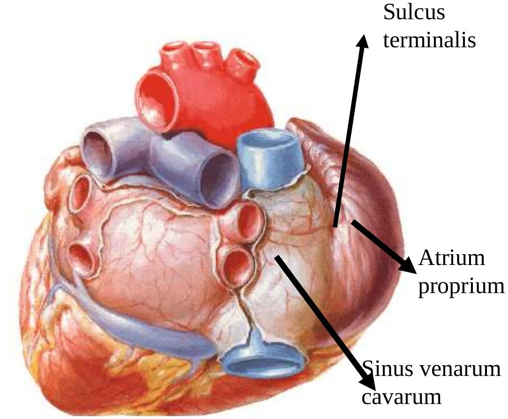
Sağ atriyuma açılan delikler şunlardır:
Medial duvar (septum interatriale). Septumun sağ yüzünde, VCİ ağzının hemen üstünde oval bir çukur görülür: fossa ovalis. Bu, fetüsteki foramen ovale'nin kapanmış yeridir. Çukurun tabanı ince bir zardır (gelişimdeki septum primum'un artığı), çevresindeki kabarık kenara limbus fossae ovalis denir (septum secundum'un serbest kenarı). Bu iki yapının kökeni, foramen ovale'nin neden kapandığı ve kapanmazsa ne olduğu Bölüm 6'da anlatılır. Septumun alt kısmında, ostium sinus coronarii ile triküspit kapağın septal yaprağının tutunma yeri arasındaki üçgen alana Koch üçgeni denir. Nodus atrioventricularis bu üçgenin tepesindedir (Bölüm 5.1).
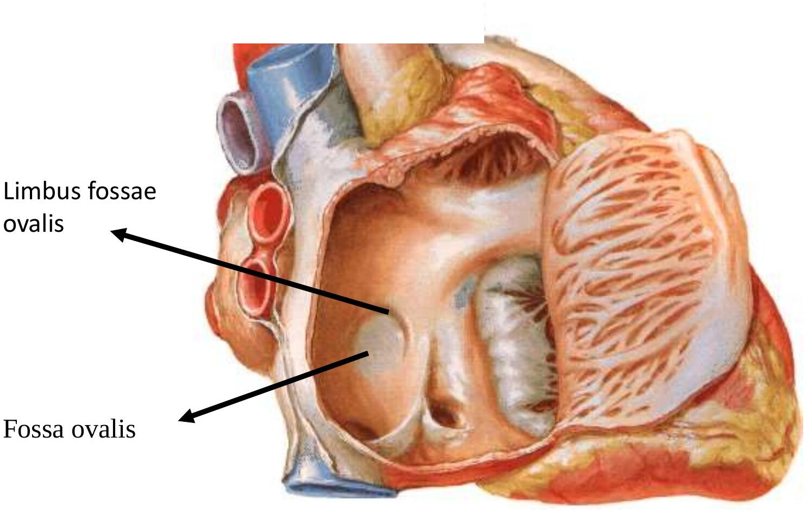
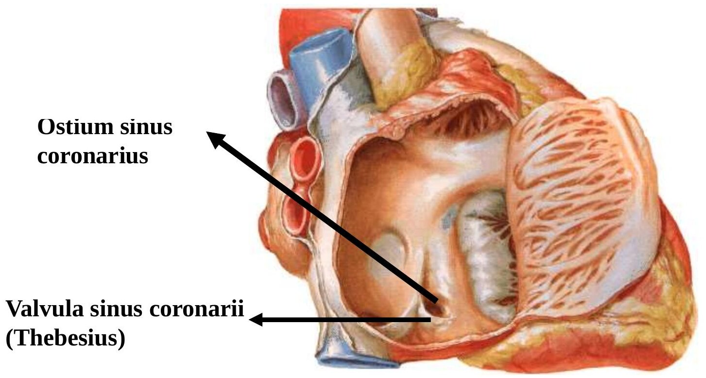
Ostium atrioventriculare dextrum kalbin en büyük kapak deliğidir. Sağ atriyumun ön-alt tarafında, 4. interkostal aralık düzeyinde corpus sterni'nin arkasındadır ve anulus fibrosus dexter denen fibröz bir halkayla çevrilidir. Deliği sistolde valva tricuspidalis kapatır (2024-2025: sağ atriyum ile sağ ventrikül arasındaki kapak triküspit kapak olarak soruldu). Kapağın üç yaprağı (cuspis) vardır: cuspis anterior (en büyüğü), cuspis septalis ve cuspis posterior. Yaprakların tabanı fibröz halkaya tutunur. Yapraklar endokardın iki kat hâlinde katlanmasıyla (reduplikasyon) oluşur ve aralarında ince bir bağ dokusu çekirdeği vardır. Atriyuma bakan yüzleri düz, ventriküle bakan yüzleri ve serbest kenarları pürüzlüdür, çünkü buraya chordae tendineae denen fibröz iplikçikler tutunur. Chordae tendineae'nin öbür ucu ventrikül duvarından çıkan papiller kaslara (mm. papillares) bağlanır.
Bu aygıt neden gereklidir? Atriyoventriküler kapaklar ince zarlardır. Ventrikül kasıldığında içindeki basınç atriyumdakinin çok üstüne çıkar ve kanı geri, atriyuma itmeye çalışır. Bu basınç kapak yapraklarını kapatır. Ama tek başına kalsalar yapraklar paraşütün kumaşı gibi atriyuma doğru ters dönerdi. Chordae tendineae paraşütün ipleri gibi yaprakların kenarını ventriküle bağlı tutar. Burada bir sorun daha vardır: ventrikül kasıldıkça kısalır, tabanı ile tepesi birbirine yaklaşır ve ipler gevşer. Papiller kaslar bu gevşemeyi telafi eder. Sunumdaki ayrıntı tam bu noktayı açıklar: ventriküler sistol papiller kaslarda başlar, ardından ventrikül duvarı ve septum kasılır. Papiller kaslar önce kasılıp chordae'yi gerdiği için, ventrikül basıncı yükseldiğinde yapraklar zaten tutulmuş olur. Her papiller kas komşu iki yaprağa chordae gönderir, böylece kasılınca iki yaprağın kenarlarını birbirine doğru çeker. Papiller kas yırtılırsa (örneğin miyokard infarktüsünden sonra) yaprak atriyuma savrulur ve ağır, akut bir kapak yetmezliği gelişir.
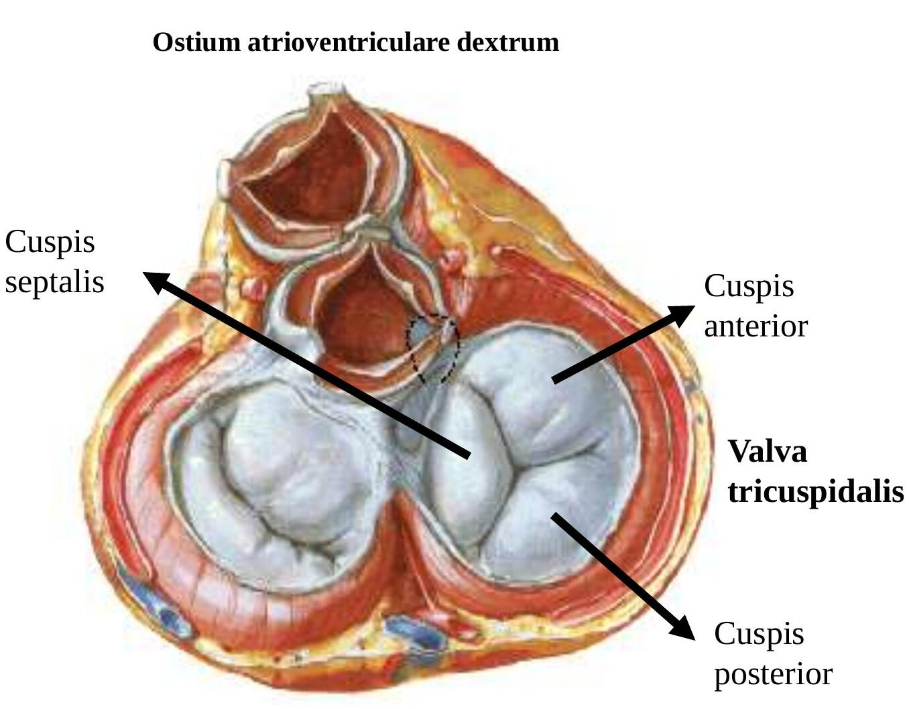
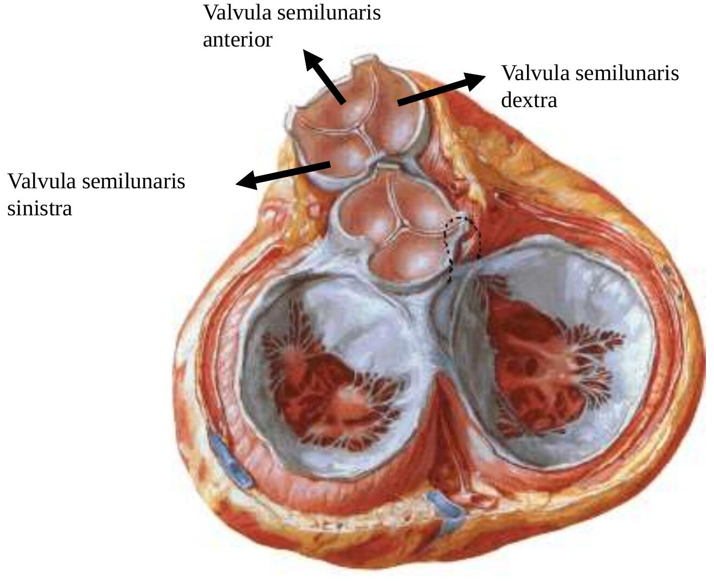
Sağ ventrikül kalbin ön yüzünün büyük kısmını oluşturur ve sternumun arkasındadır. Kesitte hilal biçimindedir, çünkü kalın duvarlı sol ventrikülün önüne ve sağına sarılır. Duvarı 3-4 mm kalınlığındadır. İç yüzü iki bölgeye ayrılır: kanın girdiği pürüzlü giriş bölümü ve kanın çıktığı düz çıkış bölümü. İki bölümü, triküspit kapak ile pulmoner kapak arasında kavis yapan kalın bir kas kabarıntısı ayırır: crista supraventricularis. Kan triküspit kapaktan girip ventrikülün tabanına iner, sonra crista'nın altından U çizerek dönüp yukarı, pulmoner kapağa çıkar (Şekil 3.4).
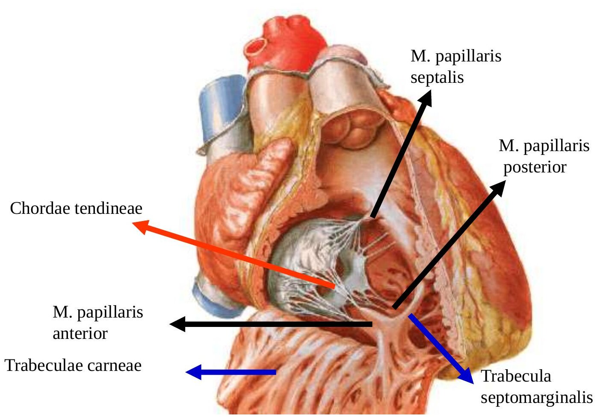
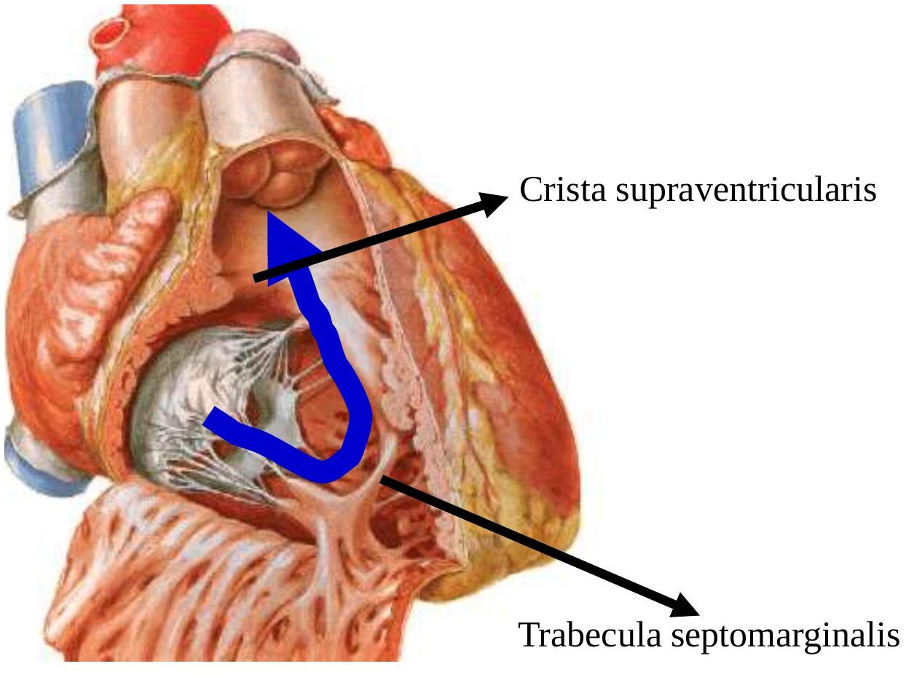
Ostium trunci pulmonalis ve valva trunci pulmonalis. Pulmoner delik conus arteriosus'un tepesinde, triküspit deliğin yukarısında ve solundadır. Dört kapağın en önde ve en yukarıda olanıdır. Diyastolde valva trunci pulmonalis ile kapanır. Kapağın üç yarım ay biçimli yaprağı (valvulae semilunares) vardır: dextra, sinistra ve anterior. (Valvula semilunaris anterior 2025-2026 uygulama sınavında gösterildi.) Her yaprağın arkasında damar duvarıyla arasında bir cep kalır: sinus trunci pulmonalis. Semilunar kapakların chordae'si ve papiller kası yoktur. Nasıl kapandıkları aort kapağında anlatılır (3.6).
Sol atriyum kalbin en arkadaki boşluğudur. Sağ atriyumdan küçüktür. Basis cordis'in büyük bölümünü ve sinus obliquus pericardii'nin ön duvarını yapar (Bölüm 2.4). Asıl atriyum boşluğu ve öne uzanan auricula sinistra olmak üzere iki bölümü vardır. Asıl boşluğun duvarı düzdür, çünkü gelişimde akciğer venlerinin ortak gövdesi atriyumun duvarına katılmıştır. Mm. pectinati yalnızca auricula sinistra'da bulunur. İç yüzde şunlar görülür:
Valva mitralis (valva atrioventricularis sinistra, biküspit kapak). İki yaprağı vardır: cuspis anterior ve cuspis posterior. Adını piskopos başlığına (mitra) benzemesinden alır. Ön yaprak mitral delik ile aort deliği arasındadır ve aort kapağıyla fibröz olarak devamlıdır. Bu yüzden sol ventrikülden aortaya giden kan ön yaprağın iki yüzünü de yalar: diyastolde atriyumdan gelen kan bir yüzünü, sistolde aortaya giden kan diğer yüzünü. Yaprakların chordae tendineae'si sol ventrikülün iki papiller kasına bağlanır. Mekanizma triküspit kapaktakinin aynısıdır (3.3), ama sol ventrikülün basıncı beş kat yüksek olduğu için aygıt çok daha güçlüdür.
Mitral kapak hastalığı neden akciğeri etkiler? Mitral darlığında kan sol atriyumdan ventriküle zor geçer. Mitral yetersizliğinde ise her sistolde kanın bir kısmı sol atriyuma geri kaçar. İki durumda da sonuç aynıdır: sol atriyumun basıncı yükselir. Vv. pulmonales kapaksız olduğu için bu basınç geriye, akciğer venlerine ve kapillerlerine iletilir. Pulmoner venöz ve kapiller basınç plazmayı alveollerin arasındaki dokuya iten kuvveti aşınca sıvı önce interstisyuma, sonra alveollere dolar: akciğer ödemi. Sol kalp yetersizliğinde de aynı zincir işler ve akciğer ödemi sol kalp yetersizliğinin en belirgin bulgusudur (bu zincir beş fizyoloji sorusunda soruldu: mitral hastalığının pulmoner vasküler basıncı artırdığı Derleme S23 ve 2024-2025'te, alveol interstisyumunu sıvıyla dolduran hastalığın mitral kapak hastalığı olduğu 2023-2024 S12 ve 2024-2025'te, sol kalp yetersizliğinin en belirgin göstergesinin pulmoner ödem olduğu 2023-2024 S9'da).
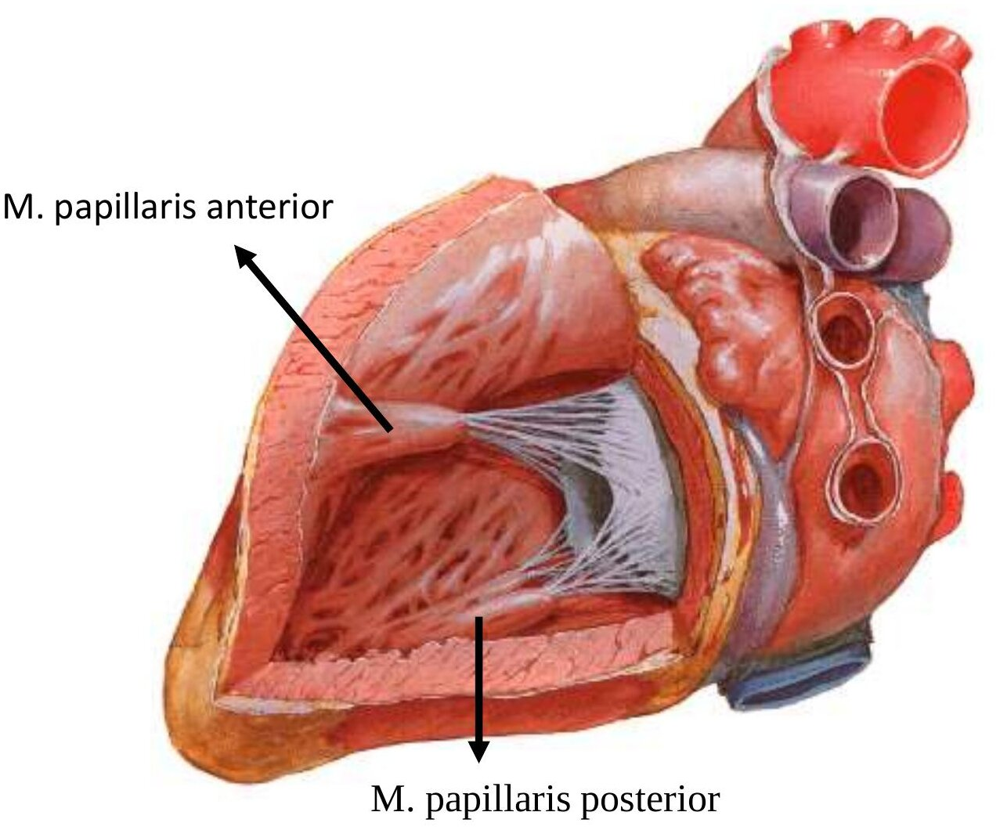
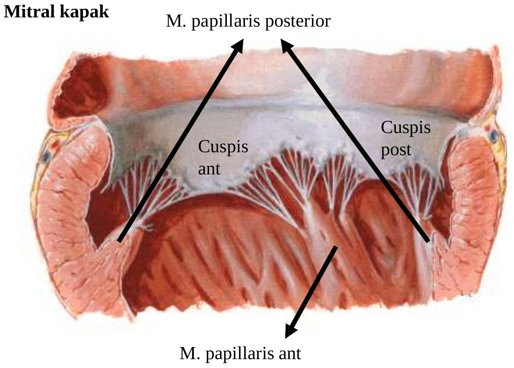
Sol ventrikül sağdakinden daha uzun ve dardır. Koni biçimindedir ve kesitte yuvarlaktır. Duvarı 8-12 mm kalınlığındadır, yani sağ ventrikülün yaklaşık üç katı. Bu farkın nedeni iki ventrikülün karşısındaki dirençtir (Şekil 3.6). Sol ventrikül kanı bütün vücudun damar yatağına yaklaşık 120 mmHg basınçla atar, sağ ventrikül ise kısa ve geniş akciğer yatağına yaklaşık 25 mmHg ile. İki ventrikül her atımda aynı hacmi atar, ama sol ventrikülün yaptığı iş beş kat fazladır. Kalp kası, her kas gibi, iş yüküne göre kalınlaşır. Aynı nedenle sistemik hipertansiyonda sol ventrikül, akciğer hipertansiyonunda sağ ventrikül duvarı kalınlaşır (hipertrofi).
İç yüzde trabeculae carneae sağ ventriküldekinden daha çok sayıda, daha ince ve sık örülüdür, özellikle apekste. Sol ventrikülde iki papiller kas vardır: m. papillaris anterior ve m. papillaris posterior. İkisi de sağ ventrikülün papiller kaslarından büyüktür. Sol ventrikülde trabecula septomarginalis ve m. papillaris septalis yoktur. Aort kapağının hemen altındaki, septum interventriculare'nin membranöz kısmı ile mitral kapağın ön yaprağı arasında kalan düz duvarlı çıkış yoluna vestibulum aortae denir. Sağdaki conus arteriosus'un karşılığıdır.
| Yapı | Sağ ventrikül | Sol ventrikül |
|---|---|---|
| Duvar kalınlığı, kesit | 3-4 mm, hilal | 8-12 mm, yuvarlak |
| Giriş kapağı | Triküspit (3 yaprak) | Mitral (2 yaprak) |
| Papiller kaslar | 3: anterior, posterior, septalis | 2: anterior, posterior (daha büyük) |
| Trabeculae carneae | Var (daha kaba) | Var (daha ince ve çok sayıda) |
| Chordae tendineae | Var | Var |
| Trabecula septomarginalis | Var | Yok |
| Çıkış yolu | Conus arteriosus (infundibulum) | Vestibulum aortae |
| Giriş ve çıkışı ayıran yapı | Crista supraventricularis (kas) | Mitral kapağın ön yaprağı (fibröz devamlılık) |
| Mm. pectinati | Hiçbir ventrikülde yoktur, atriyumlara (ve aurikulalara) özgüdür | |
Bu tablo dört farklı sorunun cevabıdır. Sol ventrikülde bulunan yapılar m. papillaris, chordae tendineae ve trabeculae carneae'dir (2024-2025). İki ventrikülde de bulunanlar trabeculae carneae ve chordae tendineae'dir (2024-2025). "Ventriculus sinister: m. papillaris septalis" eşleştirmesi yanlıştır (2023-2024 S12 ve Derleme S50). Çeldiricilerde en sık kullanılan iki yapı trabecula septomarginalis (yalnızca sağ ventrikül) ve mm. pectinati'dir (yalnızca atriyum).
Ostium aortae ve valva aortae. Aort deliği sol ventrikülün tabanında, mitral deliğin önünde ve sağındadır. Valva aortae'nin pulmoner kapağa benzeyen üç yarım ay yaprağı vardır: valvula semilunaris dextra, sinistra ve posterior. Her yaprağın arkasında aorta duvarıyla arasında bir cep kalır: sinus aortae (Valsalva sinüsü). A. coronaria dextra sağ sinüsten, a. coronaria sinistra sol sinüsten çıkar. Arka sinüsten koroner arter çıkmaz. Bu yüzden yapraklara klinikte sağ koroner, sol koroner ve nonkoroner yaprak da denir.
Semilunar kapaklar nasıl kapanır? Her yaprağın serbest kenarının ortasında küçük fibröz bir kabarıklık, nodulus valvulae semilunaris (Arantius cisimciği), iki yanında da ince, hilal biçimli birer alan, lunula bulunur. Ventrikül kasıldığında kan yaprakları duvara yaslar ve kapak açılır. Ventrikül gevşeyip basıncı aortadakinin altına düşünce kan geri akmaya başlar, ama önce yaprakların arkasındaki ceplere dolar. Dolan cepler yaprakları ortaya doğru iter. Üç yaprak lunulalarıyla birbirine yaslanır, noduluslar tam ortada buluşarak kalan küçük üçgen açıklığı kapatır. Kapanma bir ipin çekilmesiyle değil, kanın kendi ağırlığıyla olur. Semilunar kapakların chordae'ye ihtiyaç duymamasının nedeni budur. Aynı düzen koronerlerin beslenme zamanını da belirler. Koroner deliklerin ağzı sinüslerin içindedir. Diyastolde sinüsler kanla dolar ve kalp kası gevşemiş olduğu için koroner arterlere kan akar. Sistolde ise kasılan miyokard kendi damarlarını sıkar. Sol ventrikül kasının kanlanması bu yüzden büyük ölçüde diyastolde olur. Kalp hızlandığında sistolün süresi pek değişmez, kısalan asıl dönem diyastoldür (üç kaynakta da soruldu: kalp hızı 200/dk olan kişide en belirgin kısalan dönem diyastoldür). Çok hızlı kalpte hem ventrikül dolumu hem koroner akım bu yüzden azalır (Bölüm 4).
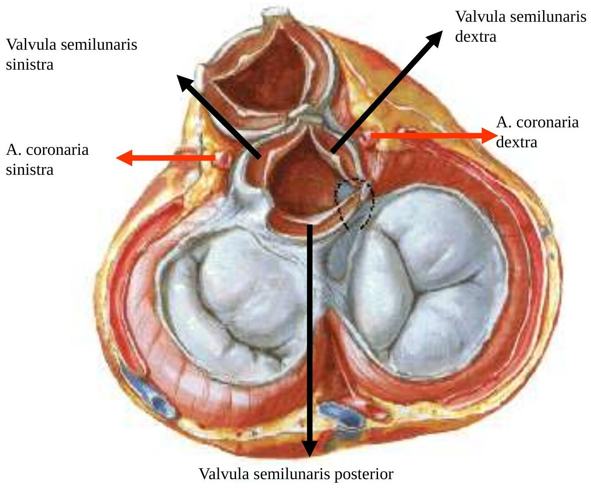
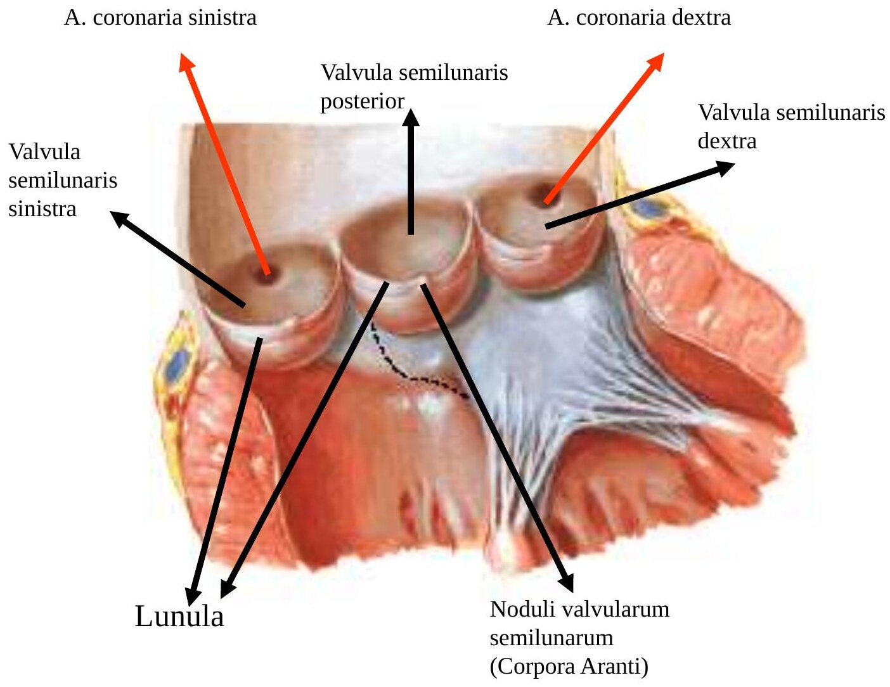
Septum interventriculare sağ ventrikülün sol ve arka duvarını yapar. Ön ve arka kenarları dışta sulcus interventricularis anterior ve posterior'a uyar. Tam sagittal düzlemde değildir: arkadan öne ve sağdan sola eğiktir. Ayrıca sol ventrikülün yüksek basıncı nedeniyle sağ ventriküle doğru kabarıktır. Bu yüzden kesitte sol ventrikül yuvarlak, sağ ventrikül onun önüne sarılmış bir hilal gibi görünür. Septumun iki bölümü vardır:
Ventriküler septal defekt (VSD) en sık görülen doğumsal kalp hastalığıdır ve çoğu membranöz kısımda olur, çünkü bu kısım gelişimde birbirinden farklı üç dokunun (kas septum, endokardiyal yastıklar ve konotrunkal çıkıntılar) son birleştiği yerdir. VSD'de kan yüksek basınçlı sol ventrikülden sağa geçer. Kalp üfürümü göğüs duvarında en iyi sol 3.-4. interkostal aralıkta (Erb odağı) duyulur (3.11).
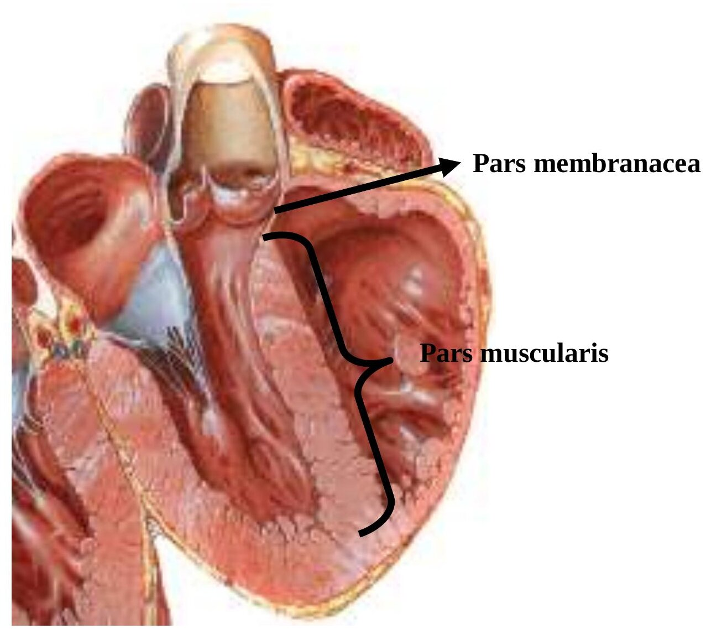
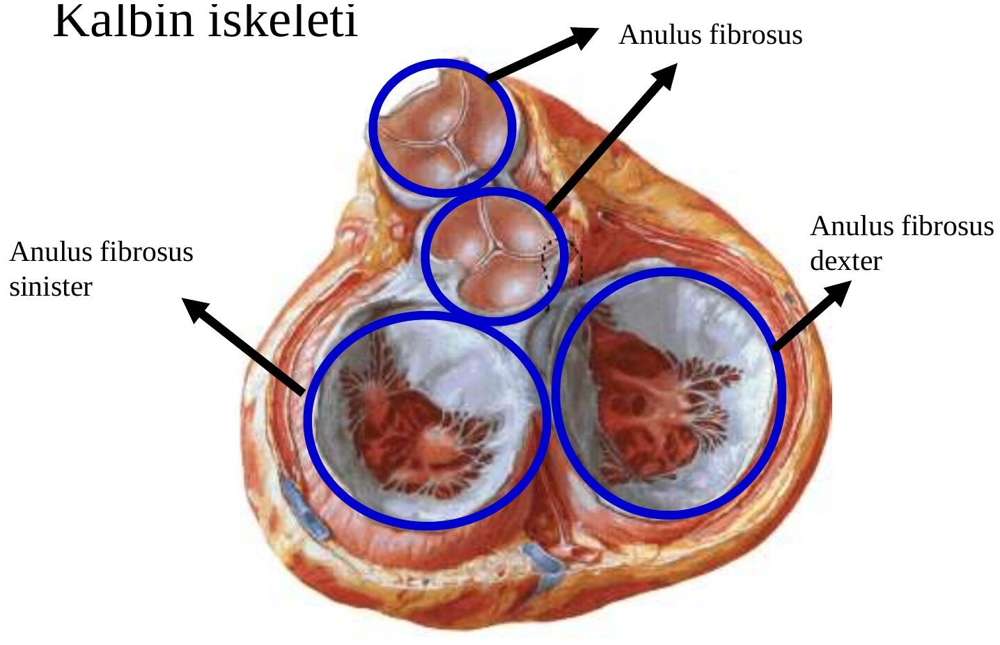
Dört kapağın delikleri kapak düzleminde birbirine yaslanır ve sıkı fibröz bağ dokusundan bir iskeletle çevrilir. İskeleti oluşturan yapılar şunlardır: iki atriyoventriküler deliği çeviren anulus fibrosus dexter ve sinister, aort ve pulmoner deliklerin çevresindeki fibröz halkalar, trigonum fibrosum dextrum ve sinistrum ve septumun pars membranacea'sı. Trigonum fibrosum dextrum iskeletin en güçlü parçasıdır. Mitral, triküspit ve aort deliklerinin karşılaştığı yerde, membranöz septumla birlikte bir kitle oluşturur. Bu yüzden ona corpus fibrosum centrale de denir. Trigonum fibrosum sinistrum aort deliği ile mitral delik arasındadır.
İskeletin üç işi vardır ve üçü de yapısından çıkar:
Kalp duvarı içten dışa üç katmandan oluşur (Şekil 2.3). Endocardium boşlukların iç yüzünü ve kapakları örten ince zardır. En içte tek katlı endotel vardır ve damarların tunica intima'sına karşılık gelir. Endotelin altında ince bağ dokusu, onun altında da ileti sisteminin Purkinje liflerini taşıyan subendokardiyal katman bulunur. Myocardium kalp kasıdır ve duvarın asıl kalınlığını oluşturur. Epicardium seröz perikardın visseral yaprağıdır. Altındaki yağ dokusunda koroner damarlar seyreder.
Miyokardın lif düzeni. Atriyumların ve ventriküllerin kas lifleri birbiriyle devam etmez, çünkü ikisi de fibröz iskeletten ayrı ayrı başlar. Atriyum duvarı ventriküllerinkinden incedir ve yönleri farklı iki tabakadan oluşur: yüzeyel tabakanın lifleri iki atriyumu birlikte sarar, derin tabakanın lifleri yalnızca bir atriyumu sarar. Ventriküllerde ise lifler birbirinin devamıdır. Bir kas lifi kalp iskeletinden başlar, dış tabakada eğik-uzunlamasına seyirle tepeye iner, yol boyunca yön değiştirerek orta tabakada dairesel seyir alır, tepede bir girdap yaparak (vortex cordis) iç tabakaya geçer ve iç tabakada uzunlamasına yukarı çıkıp yine iskelette sonlanır. Orta ve iç tabakanın lifleri septuma katılır. İç tabakanın liflerinin bir kısmı trabeculae carneae ve papiller kaslarda sonlanır. Bu sarmal düzen kasılmanın biçimini belirler: dairesel orta tabaka boşluğu daraltır, uzunlamasına ve eğik tabakalar tabanı tepeye doğru çeker ve kalbi bir bez sıkar gibi burarak kanı dışarı atar.
Kapakların hiçbiri kas gücüyle açılıp kapanmaz. Her kapak iki yanındaki basınç farkını izler: önündeki basınç arkasındakinden yüksekse açılır, düşükse kapanır. Bir atım bu kurala göre beş evrede incelenir (sol kalp için; sağ kalpte aynı olaylar daha düşük basınçlarla olur):
| Evre | Ne olur? | Mitral (AV) kapak | Aort (semilunar) kapak |
|---|---|---|---|
| 1. Hızlı ve yavaş dolum (diyastol) | Ventrikül gevşektir, atriyum basıncı daha yüksektir, kan ventriküle akar. | Açık | Kapalı |
| 2. Atriyum sistolü (diyastolün sonu) | Atriyum kasılır, ventrikül dolumunu tamamlar. | Açık | Kapalı |
| 3. İzovolümetrik kasılma | Ventrikül kasılmaya başlar. Basıncı atriyumunkini geçer ama henüz aortanınkini geçmemiştir. Hacim değişmez. | Kapanır (1. kalp sesi) | Kapalı |
| 4. Fırlatma (ejeksiyon) | Ventrikül basıncı aortanınkini geçer, kan aortaya atılır. | Kapalı | Açık |
| 5. İzovolümetrik gevşeme | Ventrikül gevşer, basıncı aortanınkinin altına düşer. Kan geri akarken sinüsleri doldurur. | Kapalı | Kapanır (2. kalp sesi) |
Tablo iki fizyoloji sorusunu doğrudan cevaplar. Atriyoventriküler kapakların açık olduğu evre atriyum sistolüdür. İzovolümetrik kasılma ve gevşemede bütün kapaklar kapalıdır, fırlatma evresinde AV kapaklar kapalıdır (Derleme fizyoloji S10). Sol ventrikül gevşemeye başladığında ilk olay aort kapağının kapanmasıdır (Derleme fizyoloji S8).
Dört kapak göğüs ön duvarında, sol 3. kaburga kıkırdağını sağ 6. kaburga kıkırdağına bağlayan eğik bir çizginin üzerinde, sternumun arkasında yer alır. Yukarıdan aşağı sıraları şöyledir: pulmoner kapak (sol 3. kıkırdağın sternal ucunun arkası, en yüksekte), aort kapağı (sternumun sol yarısının arkası, 3. İKA düzeyi), mitral kapak (sol 4. kıkırdak düzeyi) ve triküspit kapak (sternumun sağ yarısının arkası, 4. İKA düzeyi).
Kapakların sesleri ise anatomik yerlerinde değil, kanın akım yönünde, kapağın sesinin göğüs duvarına en iyi iletildiği noktada dinlenir. Aort kapağının sesi aorta ascendens'in göğüs duvarına en çok yaklaştığı yerde, pulmoner kapağın sesi truncus pulmonalis'in üzerinde, AV kapakların sesleri ise kapağın açıldığı ventrikülün göğüs duvarına değdiği yerde en iyi duyulur. Bu yüzden dinleme odakları şunlardır:
| Kapak | Dinleme (oskültasyon) odağı |
|---|---|
| Aort kapağı | Sağ 2. interkostal aralık, sternumun hemen yanı |
| Pulmoner kapak | Sol 2. interkostal aralık, sternumun hemen yanı |
| Triküspit kapak | Sol 5. kaburga kıkırdağının sternuma tutunduğu yer (sternumun sol alt kenarı) |
| Mitral kapak | Apeks: sol 5. interkostal aralığın orta klavikula çizgisiyle kesiştiği yer, orta hattın 7-9 cm solu |
| Erb (mezokardiyak) odağı | Sol 3. interkostal aralık, sternum kenarı. VSD üfürümleri en iyi burada duyulur. |
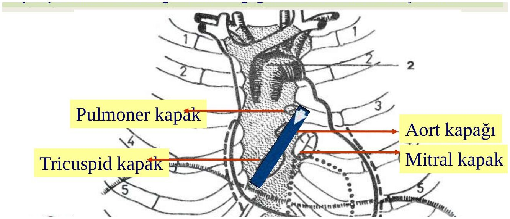
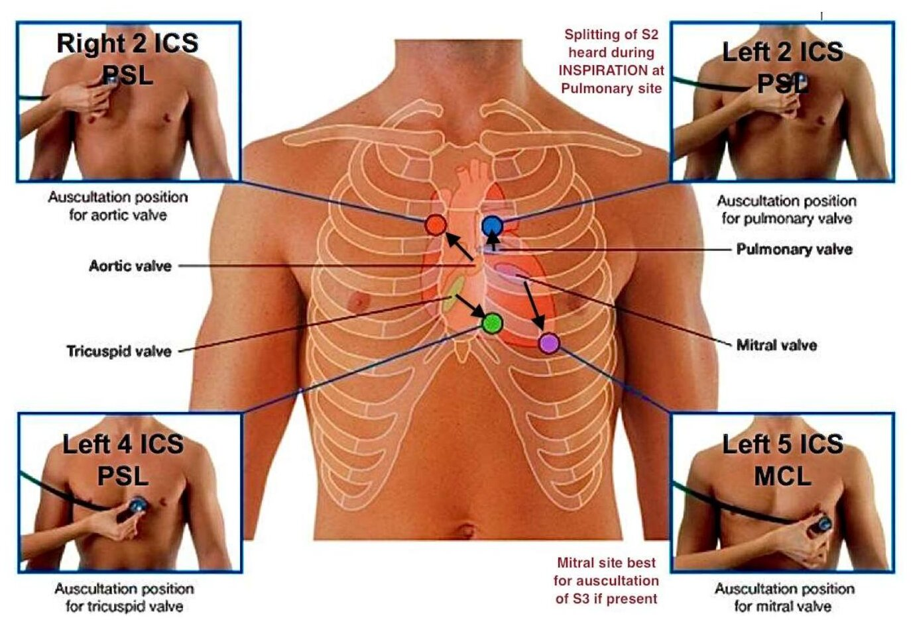
Doğru: C. Sol ventrikülde iki papiller kas (anterior ve posterior), onlardan mitral yapraklara giden chordae tendineae ve iç yüzü örten ince trabeculae carneae bulunur.
I yanlış: trabecula septomarginalis septumdan sağ ventrikülün ön papiller kasına uzanan, crus dextrum'u taşıyan köprüdür ve yalnızca sağ ventrikülde bulunur. Bu yüzden I'i içeren A ve D yanlıştır. III yanlış: mm. pectinati atriyumlara ve aurikulalara özgüdür, hiçbir ventrikülde yoktur. Bu yüzden III'ü içeren A, B ve E yanlıştır.
Doğru (yanlış eşleştirme): A. M. papillaris septalis septumdan çıkan küçük papiller kastır ve yalnızca sağ ventrikülde bulunur. Sol ventrikülde yalnızca anterior ve posterior papiller kaslar vardır.
B doğrudur: interventriküler oluklar apeksin sağında birleştiği için apeksi tümüyle sol ventrikül oluşturur. C doğrudur: crista terminalis sağ atriyumda sinus venarum cavarum ile atrium proprium'un sınırıdır. D doğrudur: moderatör bant sağ ventriküle özgüdür. E doğrudur: conus arteriosus sağ ventrikülün pulmoner kapağa uzanan düz duvarlı çıkış yoludur. 2023-2024'teki aynı soruda "atrium dextrum: mm. pectinati", "ventriculus sinister: trabecula carnea", "ventriculus dexter: m. papillaris anterior" eşleştirmeleri de doğru verilmişti.
Doğru: B. Trabeculae carneae ve chordae tendineae iki ventrikülde de bulunur. İki ventrikülün de iç yüzü trabeküllüdür ve iki AV kapağın yaprakları da chordae aracılığıyla papiller kaslara bağlıdır.
I yalnızca sağ ventrikülde bulunduğu için A, D ve E yanlıştır. IV yalnızca atriyumlarda bulunduğu için C ve D yanlıştır.
Doğru: B. Mitral kapağın sesi kanın akım yönünde, sol ventrikülün göğüs duvarına en çok yaklaştığı apekste en iyi duyulur. Apeks sol 5. İKA'da, orta klavikula çizgisi üzerindedir.
A yanlış: sol 2. İKA sternum kenarı pulmoner odaktır. C yanlış: sağ 2. İKA sternum kenarı aort odağıdır. D yanlış: sternumun arkası kapakların anatomik yeridir, dinleme yeri değildir. Mitral kapağın anatomik yeri sol 4. kıkırdak düzeyinde sternumun arkasıdır, dinleme yeri apekstir. E yanlış: sternumun sol alt kenarı (4.-5. İKA) triküspit odağıdır.
Doğru: B. Atriyum sistolü diyastolün son kısmıdır. Atriyumlar kasılarak ventriküllere son bir miktar kan iter. Kanın atriyumdan ventriküle geçebilmesi için AV kapakların açık olması gerekir.
A ve D yanlış: izovolümetrik gevşeme ve kasılmada ventrikül kapalı bir kutudur, dört kapak da kapalıdır. Hacmin değişmemesinin nedeni budur. C yanlış: fırlatmada ventrikül basıncı atriyumunkinin çok üstündedir, AV kapaklar kapalı, semilunar kapaklar açıktır. E yanlış: protodiyastol ventrikül gevşemesinin ilk anıdır. Semilunar kapaklar henüz kapanmak üzeredir, AV kapaklar ise kapalıdır.
Doğru (yanlış ifade): E. Kapak yapraklarının tabanı iskeletin fibröz halkalarına (anuli fibrosi) tutunur. Papiller kaslara yaprakların kendisi değil, serbest kenarlarından çıkan chordae tendineae bağlanır. Semilunar kapakların ise papiller kası hiç yoktur.
A doğrudur: mitral, triküspit ve aort deliklerinin arasındaki fibröz kitle membranöz septumla birlikte iskeletin merkezidir. B doğrudur: atriyum ve ventrikül lifleri iskeletten başlar ve iskelette sonlanır. C doğrudur: fibröz doku elektriği iletmez, atriyumlar ile ventriküller arasında yalıtım sağlar. D doğrudur: His demeti bu yalıtımın tek doğal kapısıdır ve corpus fibrosum centrale'yi delerek ventriküllere geçer.